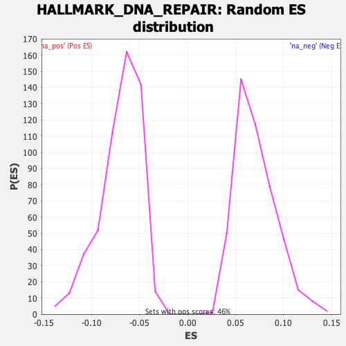

| | | Dataset | rankedList_GRAMD1B |
| Phenotype | NoPhenotypeAvailable |
| Upregulated in class | na_pos |
| GeneSet | HALLMARK_DNA_REPAIR |
| Enrichment Score (ES) | 0.24856983 |
| Normalized Enrichment Score (NES) | 3.4989433 |
| Nominal p-value | 0.0 |
| FDR q-value | 0.0 |
| FWER p-Value | 0.0 |
Table: GSEA Results Summary
 Fig 1: Enrichment plot: HALLMARK_DNA_REPAIR
Fig 1: Enrichment plot: HALLMARK_DNA_REPAIR
Profile of the Running ES Score & Positions of GeneSet Members on the Rank Ordered List
| SYMBOL | RANK IN GENE LIST | RANK METRIC SCORE | RUNNING ES | CORE ENRICHMENT | | 1 | GTF2H1 | 285 | 0.257 | -0.0017 | Yes |
| 2 | DDB1 | 348 | 0.238 | 0.0032 | Yes |
| 3 | GTF2H3 | 385 | 0.229 | 0.0089 | Yes |
| 4 | SRSF6 | 411 | 0.221 | 0.0148 | Yes |
| 5 | RFC5 | 427 | 0.215 | 0.0211 | Yes |
| 6 | RAD52 | 491 | 0.202 | 0.0260 | Yes |
| 7 | POLB | 527 | 0.194 | 0.0316 | Yes |
| 8 | POLA1 | 647 | 0.175 | 0.0348 | Yes |
| 9 | UMPS | 649 | 0.175 | 0.0415 | Yes |
| 10 | ELOA | 688 | 0.171 | 0.0471 | Yes |
| 11 | ITPA | 736 | 0.166 | 0.0524 | Yes |
| 12 | RNMT | 838 | 0.157 | 0.0562 | Yes |
| 13 | UPF3B | 901 | 0.151 | 0.0611 | Yes |
| 14 | POLR1C | 959 | 0.145 | 0.0661 | Yes |
| 15 | TYMS | 982 | 0.144 | 0.0722 | Yes |
| 16 | STX3 | 1151 | 0.132 | 0.0739 | Yes |
| 17 | NME1 | 1185 | 0.130 | 0.0797 | Yes |
| 18 | DUT | 1320 | 0.122 | 0.0824 | Yes |
| 19 | POLR1D | 1327 | 0.121 | 0.0890 | Yes |
| 20 | POLH | 1330 | 0.121 | 0.0956 | Yes |
| 21 | GTF2H5 | 1464 | 0.114 | 0.0984 | Yes |
| 22 | POLR2H | 1491 | 0.113 | 0.1044 | Yes |
| 23 | SF3A3 | 1598 | 0.109 | 0.1079 | Yes |
| 24 | NT5C | 1791 | 0.102 | 0.1090 | Yes |
| 25 | SDCBP | 1836 | 0.100 | 0.1144 | Yes |
| 26 | RAD51 | 1871 | 0.099 | 0.1201 | Yes |
| 27 | TARBP2 | 1965 | 0.096 | 0.1241 | Yes |
| 28 | SAC3D1 | 1968 | 0.096 | 0.1308 | Yes |
| 29 | AGO4 | 2036 | 0.094 | 0.1355 | Yes |
| 30 | ERCC8 | 2038 | 0.094 | 0.1422 | Yes |
| 31 | AAAS | 2130 | 0.091 | 0.1462 | Yes |
| 32 | NELFCD | 2145 | 0.091 | 0.1525 | Yes |
| 33 | SSRP1 | 2365 | 0.085 | 0.1528 | Yes |
| 34 | POLA2 | 2372 | 0.085 | 0.1593 | Yes |
| 35 | RFC3 | 2391 | 0.084 | 0.1655 | Yes |
| 36 | TMED2 | 2659 | 0.078 | 0.1643 | Yes |
| 37 | DDB2 | 3004 | 0.071 | 0.1609 | Yes |
| 38 | DGCR8 | 3089 | 0.070 | 0.1651 | Yes |
| 39 | RFC4 | 3093 | 0.070 | 0.1718 | Yes |
| 40 | IMPDH2 | 3229 | 0.067 | 0.1745 | Yes |
| 41 | ZWINT | 3498 | 0.062 | 0.1733 | Yes |
| 42 | RFC2 | 3645 | 0.060 | 0.1757 | Yes |
| 43 | PCNA | 3867 | 0.057 | 0.1759 | Yes |
| 44 | BRF2 | 3903 | 0.056 | 0.1816 | Yes |
| 45 | TAF6 | 3918 | 0.056 | 0.1879 | Yes |
| 46 | RBX1 | 4318 | 0.051 | 0.1829 | Yes |
| 47 | VPS37B | 4354 | 0.051 | 0.1886 | Yes |
| 48 | RAE1 | 4384 | 0.050 | 0.1944 | Yes |
| 49 | POLR3C | 4403 | 0.050 | 0.2006 | Yes |
| 50 | GTF2B | 4518 | 0.048 | 0.2040 | Yes |
| 51 | TAF13 | 4675 | 0.047 | 0.2061 | Yes |
| 52 | GMPR2 | 4777 | 0.046 | 0.2098 | Yes |
| 53 | NELFE | 4904 | 0.044 | 0.2128 | Yes |
| 54 | BOLA2 | 5198 | 0.041 | 0.2109 | Yes |
| 55 | POLR2C | 5246 | 0.041 | 0.2162 | Yes |
| 56 | CSTF3 | 5692 | 0.037 | 0.2098 | Yes |
| 57 | POM121 | 5805 | 0.036 | 0.2132 | Yes |
| 58 | TSG101 | 6004 | 0.034 | 0.2141 | Yes |
| 59 | ERCC2 | 6149 | 0.033 | 0.2166 | Yes |
| 60 | TP53 | 6278 | 0.031 | 0.2195 | Yes |
| 61 | NUDT21 | 6491 | 0.030 | 0.2200 | Yes |
| 62 | POLR2E | 6857 | 0.028 | 0.2160 | Yes |
| 63 | SNAPC4 | 7408 | 0.024 | 0.2065 | Yes |
| 64 | DCTN4 | 7467 | 0.024 | 0.2115 | Yes |
| 65 | NME4 | 7519 | 0.023 | 0.2167 | Yes |
| 66 | TAF12 | 7523 | 0.023 | 0.2233 | Yes |
| 67 | CLP1 | 7698 | 0.022 | 0.2249 | Yes |
| 68 | NUDT9 | 7810 | 0.022 | 0.2283 | Yes |
| 69 | RPA2 | 7892 | 0.021 | 0.2327 | Yes |
| 70 | PRIM1 | 7997 | 0.020 | 0.2363 | Yes |
| 71 | REV3L | 8231 | 0.019 | 0.2362 | Yes |
| 72 | ERCC4 | 8265 | 0.019 | 0.2419 | Yes |
| 73 | NME3 | 8397 | 0.018 | 0.2447 | Yes |
| 74 | SMAD5 | 8574 | 0.017 | 0.2463 | Yes |
| 75 | POLE4 | 8725 | 0.017 | 0.2486 | Yes |
| 76 | VPS37D | 9098 | 0.015 | 0.2443 | No |
| 77 | NCBP2 | 9355 | 0.014 | 0.2435 | No |
| 78 | CETN2 | 9772 | 0.012 | 0.2380 | No |
| 79 | DGUOK | 10149 | 0.011 | 0.2336 | No |
| 80 | CANT1 | 10596 | 0.009 | 0.2272 | No |
| 81 | PDE6G | 11130 | 0.007 | 0.2182 | No |
| 82 | ADCY6 | 11559 | 0.006 | 0.2123 | No |
| 83 | POLR2G | 11897 | 0.005 | 0.2091 | No |
| 84 | POLR3GL | 11935 | 0.005 | 0.2147 | No |
| 85 | TAF9 | 12321 | 0.004 | 0.2101 | No |
| 86 | AK1 | 12549 | 0.003 | 0.2101 | No |
| 87 | GTF3C5 | 12855 | 0.003 | 0.2078 | No |
| 88 | POLR2A | 12900 | 0.003 | 0.2132 | No |
| 89 | POLD3 | 13077 | 0.002 | 0.2148 | No |
| 90 | POLR2D | 13282 | 0.002 | 0.2155 | No |
| 91 | POLL | 13466 | 0.002 | 0.2168 | No |
| 92 | ERCC3 | 13664 | 0.001 | 0.2177 | No |
| 93 | NT5C3A | 14425 | 0.000 | 0.2020 | No |
| 94 | FEN1 | 15042 | -0.000 | 0.1906 | No |
| 95 | POLR2K | 15795 | -0.001 | 0.1752 | No |
| 96 | HPRT1 | 16823 | -0.002 | 0.1516 | No |
| 97 | PDE4B | 17580 | -0.004 | 0.1361 | No |
| 98 | BCAP31 | 18524 | -0.006 | 0.1150 | No |
| 99 | ARL6IP1 | 18585 | -0.006 | 0.1200 | No |
| 100 | MPG | 18728 | -0.006 | 0.1225 | No |
| 101 | GTF2A2 | 18777 | -0.006 | 0.1278 | No |
| 102 | POLR2F | 19711 | -0.009 | 0.1070 | No |
| 103 | RRM2B | 20066 | -0.010 | 0.1033 | No |
| 104 | PNP | 20792 | -0.012 | 0.0887 | No |
| 105 | RALA | 20930 | -0.012 | 0.0913 | No |
| 106 | ALYREF | 21362 | -0.014 | 0.0854 | No |
| 107 | SUPT4H1 | 21842 | -0.015 | 0.0780 | No |
| 108 | COX17 | 21866 | -0.015 | 0.0840 | No |
| 109 | GUK1 | 22512 | -0.018 | 0.0717 | No |
| 110 | APRT | 24135 | -0.024 | 0.0307 | No |
| 111 | ERCC5 | 24455 | -0.025 | 0.0280 | No |
| 112 | AK3 | 25362 | -0.030 | 0.0080 | No |
| 113 | CDA | 25759 | -0.031 | 0.0030 | No |
| 114 | MRPL40 | 26042 | -0.033 | 0.0014 | No |
| 115 | TAF10 | 26557 | -0.036 | -0.0070 | No |
| 116 | NFX1 | 26583 | -0.036 | -0.0010 | No |
| 117 | POLD1 | 26710 | -0.037 | 0.0020 | No |
| 118 | ADRM1 | 27403 | -0.042 | -0.0117 | No |
| 119 | SURF1 | 27582 | -0.043 | -0.0102 | No |
| 120 | POLR2J | 27611 | -0.043 | -0.0043 | No |
| 121 | VPS28 | 27696 | -0.044 | -0.0001 | No |
| 122 | GSDME | 27755 | -0.044 | 0.0049 | No |
| 123 | SEC61A1 | 27937 | -0.046 | 0.0063 | No |
| 124 | DAD1 | 27939 | -0.046 | 0.0130 | No |
| 125 | RPA3 | 28218 | -0.048 | 0.0115 | No |
| 126 | GTF2F1 | 28450 | -0.050 | 0.0114 | No |
| 127 | EDF1 | 28550 | -0.051 | 0.0152 | No |
| 128 | NPR2 | 28859 | -0.055 | 0.0129 | No |
| 129 | XPC | 28890 | -0.055 | 0.0187 | No |
| 130 | LIG1 | 28896 | -0.055 | 0.0252 | No |
| 131 | GPX4 | 29052 | -0.057 | 0.0274 | No |
| 132 | ZNF707 | 29153 | -0.058 | 0.0312 | No |
| 133 | POLD4 | 29243 | -0.059 | 0.0353 | No |
| 134 | MPC2 | 29293 | -0.060 | 0.0405 | No |
| 135 | NELFB | 29450 | -0.062 | 0.0426 | No |
| 136 | USP11 | 29509 | -0.063 | 0.0476 | No |
| 137 | CCNO | 29710 | -0.065 | 0.0485 | No |
| 138 | TK2 | 29780 | -0.066 | 0.0531 | No |
| 139 | POLR2I | 30296 | -0.074 | 0.0447 | No |
| 140 | SUPT5H | 30538 | -0.078 | 0.0443 | No |
| 141 | SNAPC5 | 30734 | -0.083 | 0.0453 | No |
| 142 | BCAM | 31074 | -0.091 | 0.0420 | No |
| 143 | ERCC1 | 31127 | -0.093 | 0.0472 | No |
| 144 | TAF1C | 31176 | -0.095 | 0.0525 | No |
| 145 | ADA | 31657 | -0.113 | 0.0450 | No |
| 146 | EIF1B | 31970 | -0.130 | 0.0426 | No |
| 147 | ELL | 32436 | -0.179 | 0.0356 | No |
| 148 | HCLS1 | 33753 | -0.760 | 0.0035 | No |
| 149 | CMPK2 | 34063 | -1.336 | 0.0011 | No |
Table: GSEA details [plain text format]

Fig 2: HALLMARK_DNA_REPAIR: Random ES distribution
Gene set null distribution of ES for HALLMARK_DNA_REPAIR